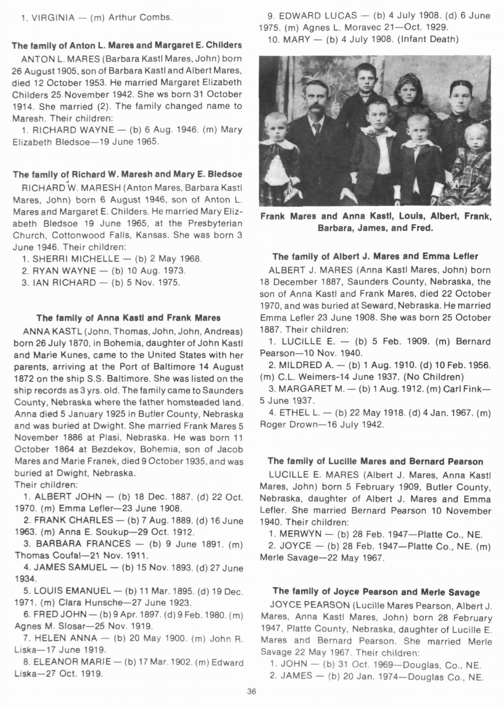

The book · The Family of John Kastl
Page 36 The family of Anton L. Mares and Margaret E. Childers


Transcription
- VIRGINIA — (m) Arthur Combs.
The family of Anton L. Mares and Margaret E. Childers
ANTON L. MARES (Barbara Kastl Mares, John) born 26 August 1905, son of Barbara Kastl and Albert Mares, died 12 October 1953. He married Margaret Elizabeth Childers 25 November 1942. She ws born 31 October 1914. She married (2). The family changed name to Maresh. Their children:
- RICHARD WAYNE — (b) 6 Aug. 1946. (m) Mary Elizabeth Bledsoe—19 June 1965.
The family of Richard W. Maresh and Mary E. Bledsoe
RICHARD W. MARESH (Anton Mares, Barbara Kastl Mares, John) born 6 August 1946, son of Anton L. Mares and Margaret E. Childers. He married Mary Elizabeth Bledsoe 19 June 1965, at the Presbyterian Church, Cottonwood Falls, Kansas. She was born 3 June 1946. Their children:
- SHERRI MICHELLE — (b) 2 May 1968.
- RYAN WAYNE — (b) 10 Aug. 1973.
- IAN RICHARD — (b) 5 Nov. 1975.
The family of Anna Kastl and Frank Mares
ANNA KASTL (John, Thomas, John, John, Andreas) born 26 July 1870, in Bohemia, daughter of John Kastl and Marie Kunes, came to the United States with her parents, arriving at the Port of Baltimore 14 August 1872 on the ship S.S. Baltimore. She was listed on the ship records as 3 yrs. old. The family came to Saunders County, Nebraska where the father homsteaded land. Anna died 5 January 1925 in Butler County, Nebraska and was buried at Dwight. She married Frank Mares 5 November 1886 at Plasi, Nebraska. He was born 11 October 1864 at Bezdekov, Bohemia, son of Jacob Mares and Marie Franek, died 9 October 1935, and was buried at Dwight, Nebraska. Their children:
- ALBERT JOHN — (b) 18 Dec. 1887. (d) 22 Oct. 1970. (m) Emma Lefler—23 June 1908.
- FRANK CHARLES — (b) 7 Aug. 1889. (d) 16 June 1963. (m) Anna E. Soukup—29 Oct. 1912.
- BARBARA FRANCES — (b) 9 June 1891. (m) Thomas Coufal—21 Nov. 1911.
- JAMES SAMUEL — (b) 15 Nov. 1893. (d) 27 June 1934.
- LOUIS EMANUEL — (b) 11 Mar. 1895. (d) 19 Dec. 1971. (m) Clara Hunsche—27 June 1923.
- FRED JOHN — (b) 9 Apr. 1897. (d) 9 Feb. 1980. (m) Agnes M. Slosar—25 Nov. 1919.
- HELEN ANNA — (b) 20 May 1900. (m) John R. Liska—17 June 1919.
- ELEANOR MARIE — (b) 17 Mar. 1902. (m) Edward Liska—27 Oct. 1919.
- EDWARD LUCAS — (b) 4 July 1908. (d) 6 June 1975. (m) Agnes L. Moravec 21—Oct. 1929.
- MARY — (b) 4 July 1908. (Infant Death)

The family of Albert J. Mares and Emma Lefler
ALBERT J. MARES (Anna Kastl Mares, John) born 18 December 1887, Saunders County, Nebraska, the son of Anna Kastl and Frank Mares, died 22 October 1970, and was buried at Seward, Nebraska. He married Emma Lefler 23 June 1908. She was born 25 October 1887. Their children:
- LUCILLE E. — (b) 5 Feb. 1909. (m) Bernard Pearson—10 Nov. 1940.
- MILDRED A. — (b) 1 Aug. 1910. (d) 10 Feb. 1956. (m) C.L. Weimers-14 June 1937. (No Children)
- MARGARET M. — (b) 1 Aug. 1912. (m) Carl Fink—5 June 1937.
- ETHEL L. — (b) 22 May 1918. (d) 4 Jan. 1967. (m) Roger Drown—16 July 1942.
The family of Lucille Mares and Bernard Pearson
LUCILLE E. MARES (Albert J. Mares, Anna Kastl Mares, John) born 5 February 1909, Butler County, Nebraska, daughter of Albert J. Mares and Emma Lefler. She married Bernard Pearson 10 November 1940. Their children:
- MERWYN — (b) 28 Feb. 1947—Platte Co., NE.
- JOYCE — (b) 28 Feb. 1947—Platte Co., NE. (m) Merle Savage—22 May 1967.
The family of Joyce Pearson and Merle Savage
JOYCE PEARSON (Lucille Mares Pearson, Albert J. Mares, Anna Kastl Mares, John) born 28 February 1947, Platte County, Nebraska, daughter of Lucille E. Mares and Bernard Pearson. She married Merle Savage 22 May 1967. Their children:
- JOHN — (b) 31 Oct. 1969—Douglas, Co., NE.
- JAMES — (b) 20 Jan. 1974—Douglas Co., NE.
People from the line of descent on this page
- Anton Leonard Mares 1905–1953
- Virginia Lewis
- Margaret Elizabeth Childers b. 1914
- Richard Wayne Maresh b. 1946
- Mary Elizabeth Bledsoe b. 1946
- Sherri Michelle Maresh b. 1968
- Ryan Wayne Maresh b. 1973
- Ian Richard Maresh b. 1975
Transcriber’s notes
Two columns. Page opens with '1. VIRGINIA — (m) Arthur Combs.', the child of Rose K. Mares and Audren A. Lewis (list begun on p. 35). The children list of Anna Kastl and Frank Mares runs 1-8 at the bottom of the left column and 9-10 at the top of the right column, above the photo. Printed oddities kept: 'She ws born', 'She married (2).' (no name given), 'homsteaded', 'Moravec 21—Oct. 1929', 'C.L. Weimers-14 June 1937' (hyphen not dash), 'Douglas, Co., NE.'. Small stray mark above the W in 'RICHARD W. MARESH' and over the m in 'Emma' in the heading are print blemishes.